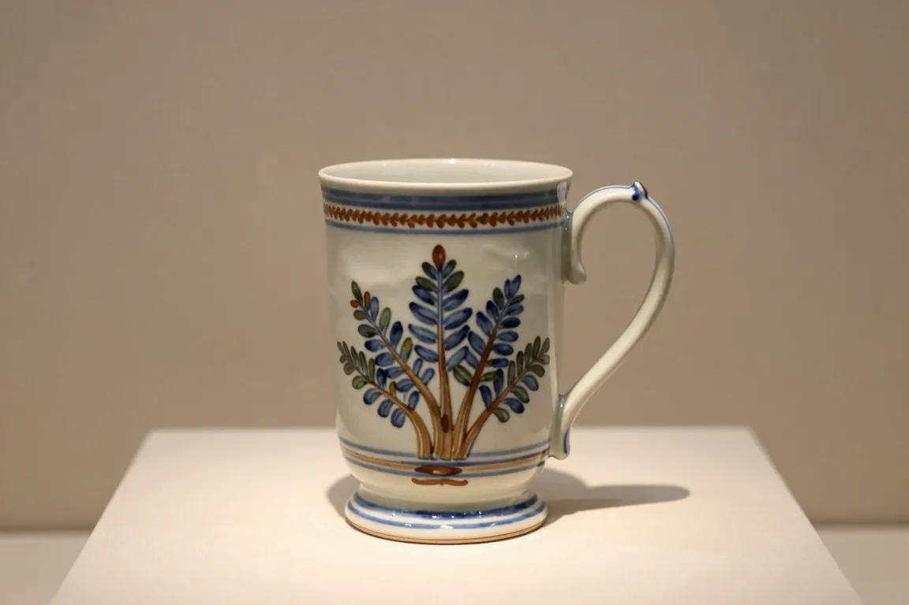

Cheap pale earthenware for the tavern and the farm kitchen. Bands of coloured slip are turned on a lathe, and a drop of acid colour spreads into a fern or a tree.

Core thesis
A machine can turn the bands of a dipped jug in one pass, and one drop of acid colour on a wet slip makes a tree that no hand can plan.
Design principles
Throw or press the body in creamware or pearlware, with a wall 4 to 6 mm thick.
Dip the leather-hard pot in a slip of one colour, then turn bands in slip on a lathe.
Cut the bands 3 to 15 mm wide, in groups of 2 or 3, in contrast of fawn, blue, green or brown.
Make the mocha tree: touch the wet slip with a drop of tobacco, turpentine and iron-oxide colour; it feathers upward in 2 seconds.
Put the tree between two bands, once or three times round a mug.
Dip the whole piece in a clear lead glaze and fire it at about 1100 °C.
Keep the shapes plain: a mug or a jug should hold a half, one or two pints.